Starter2 pieces
Trousers
The home page and Plan your visit. What the house makes from its "from" price, the process in five lines, where and when.
£99then £25 a month
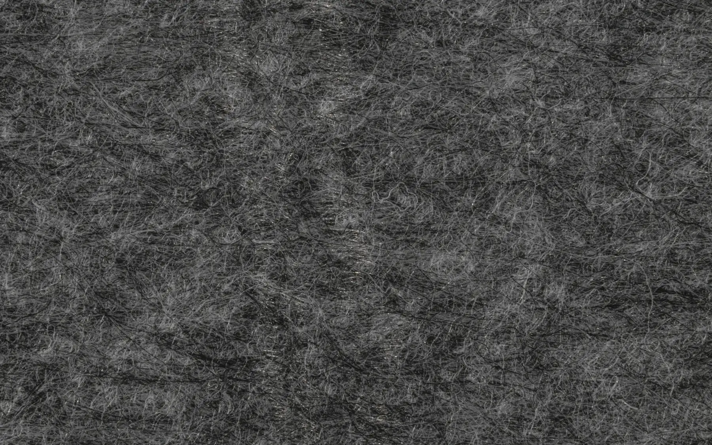
Case study · Tailors · Fennick & Lowe
A Savile Row house's website, laid out the way its cutter lays a coat: every piece is a page. Choose one.
Tap a piece · the chalk goes round it
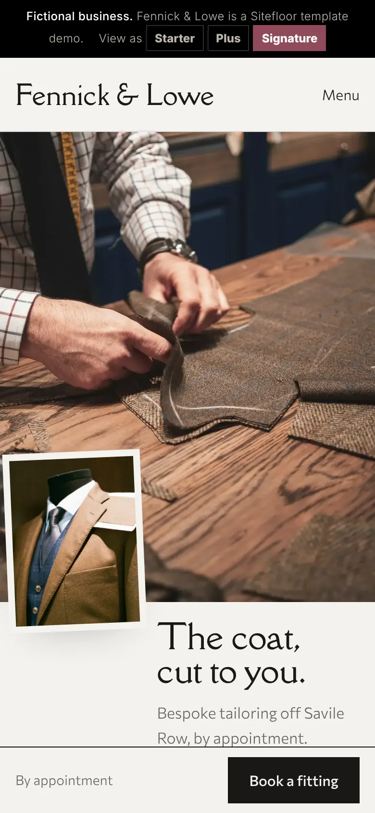
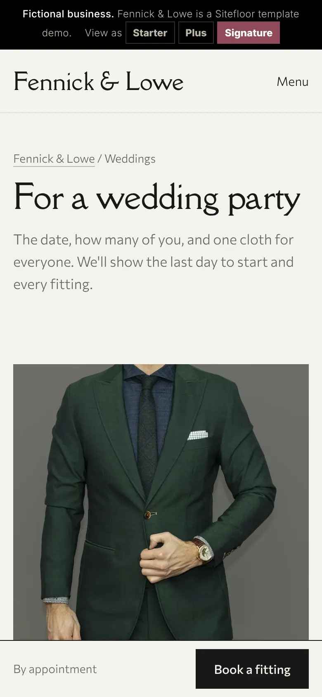
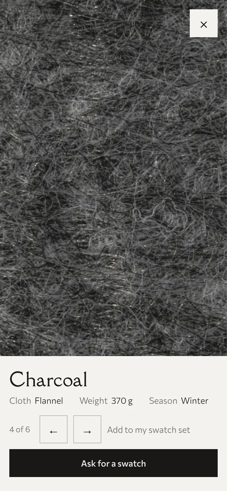
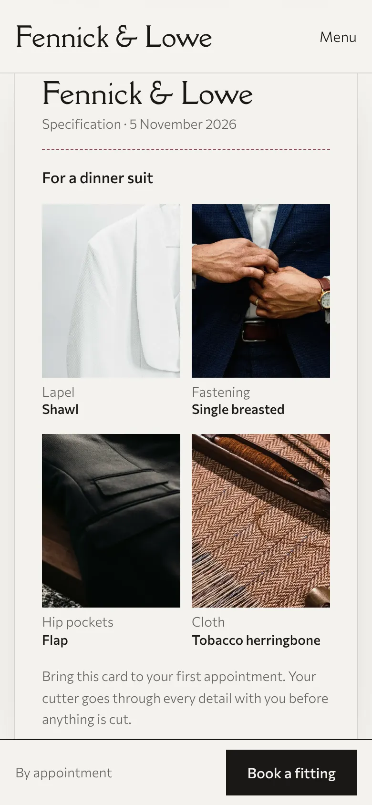
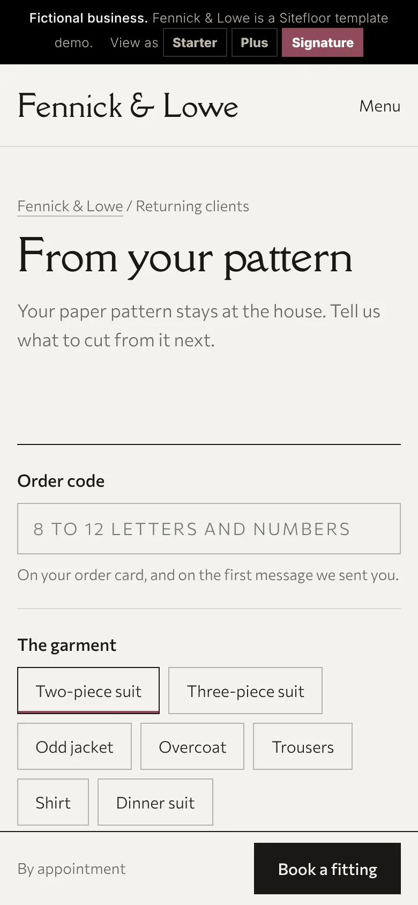
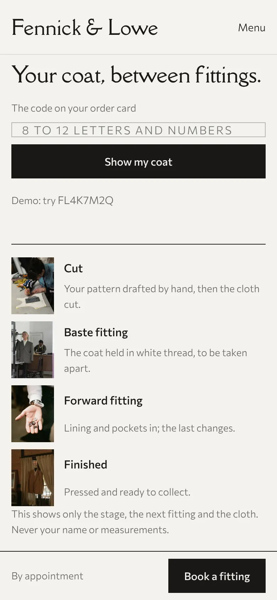
A house keeps each client's pattern tied with its ticket: the pieces, counted. This is the ticket for Fennick & Lowe's website: every page it's cut from, and the plan each one comes on.
Also cut: the process, gift vouchers, the house's story, alterations and care
Front · cut 2 · The home page
Six lengths hang from one spine on the home page. Tap one and its weave fills the screen, with the cloth, its weight and its season. Add up to five to a set, and ask for every swatch in one WhatsApp message.
PlusThe cloth book and the swatch set
Side body · Your commission
The code on the order card shows which stage the coat has reached, as photographs, and the next fitting goes to the calendar with a reminder the evening before of what to bring. The house's published sheet holds only a code, a stage, a time and a cloth: never a name or a measurement.
SignatureYour commission, by code
Collar · Your specification · try it
Every choice is a photograph of a real coat, never a drawing, and the card writes itself. On the site it goes to the house on WhatsApp with a link that opens it again, or prints to bring to the first fitting.
SignatureThe specification card
Back · cut 2 · Weddings
The wedding date and how many are being dressed. A party of four or more starts earlier, by the house's own rule; one cloth is chosen for everyone, and every fitting goes into the calendar in one file.
SignatureThe wedding party planner
Pocket flap · From your pattern
The house keeps the paper pattern. A returning client gives the code on their order card, the garment, the cloth or "the same as last time", and any change, and sends it from their own WhatsApp. The site never asks for a measurement and keeps nothing.
SignatureOrdering again from your pattern
The pages a client reads before the first appointment, each in the house's own words.
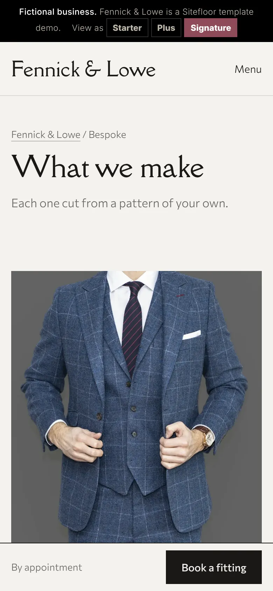
A page for each garment, with its "from" price and the cloths it's made in.
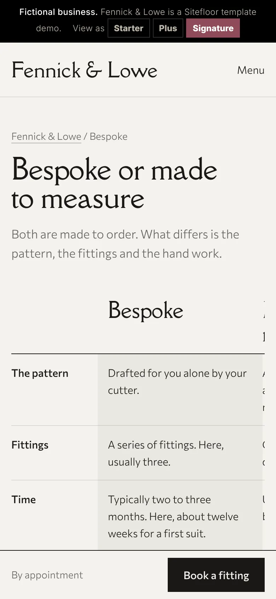
The difference in plain words, every general fact linked to its source and dated.
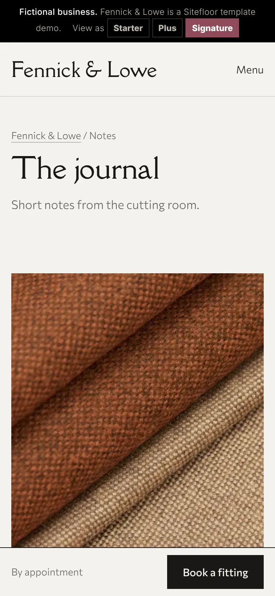
Dated articles: cloth by season, what to wear to a wedding, caring for a suit.
A cutter prices a garment by what goes into it. So do we: each page of the site is one piece of card, and the plans are the garments they make.
The home page and Plan your visit. What the house makes from its "from" price, the process in five lines, where and when.
£99then £25 a month
Home and four of these pages: the cloth library by season, what you make, the process, trunk shows, the journal. The cloth book opens on the home page; a set of five swatches goes in one message.
£199then £30 a month
Every page the house needs, and the showpieces: your commission by code, stage by stage; the specification card from the house's own photographs; the wedding party planner, every fitting in one calendar file; ordering again from your pattern.
£349then £35 a month
Twelve months minimum on every plan. Any feature on its own as an add-on; extra pages one at a time.
On Fennick & Lowe's home page, with Lighthouse on a mobile setting: three runs from a fresh server, the first one cold.
Send us a photograph of your cutting room and your price list, and we'll make a free mockup of your home page with your own cloth on it.
hello@sitefloor.com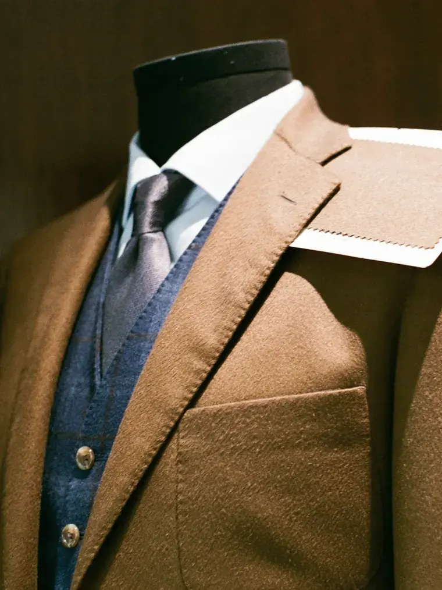